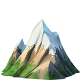
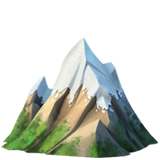
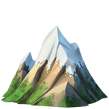
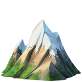

I'm Himanshi.
A programmer.
 



I am a web designer. I am passionate about my work. Because I love what I do, I have a steady source of motivation that drives me to do my best. I ❤️ drwaing, travelling.

Actually I love codings but sometime when i stuck in between errors,that time i'm disappointed but when i get a result then it is happier moment for me .I'm currently learning HTML,CSS and JS.I'm enjoying it.

But my best skill is actually i am self motivater because there will not be someone who always motivates you coming your back all the time . Life is all about developing yourself not finding yourself. If you really passionate about your goal for reaching that many obstacles may come face it and self motivate all time u definitely reach your goal.